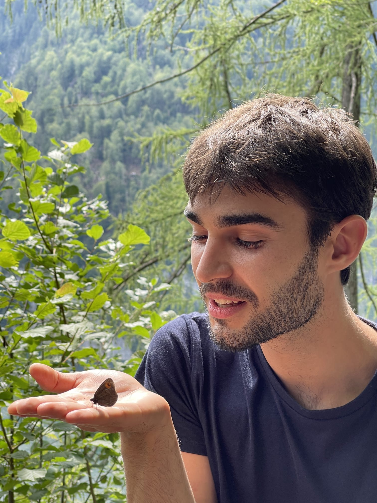
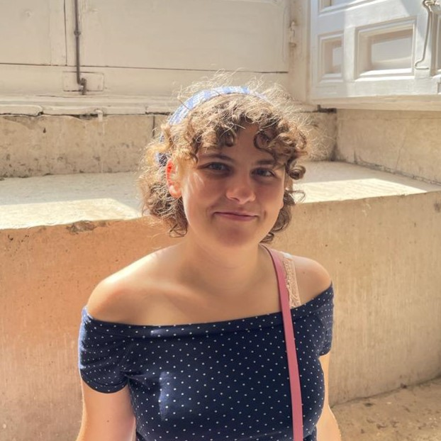
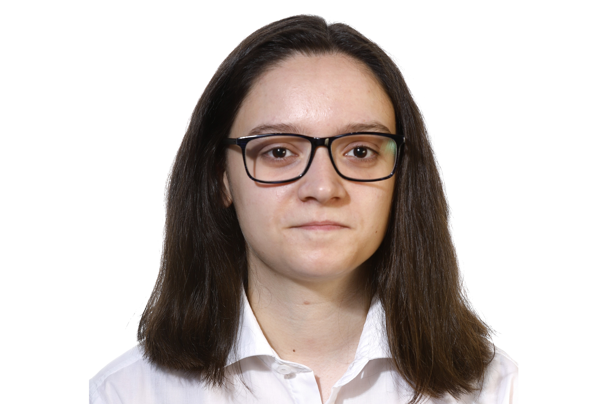
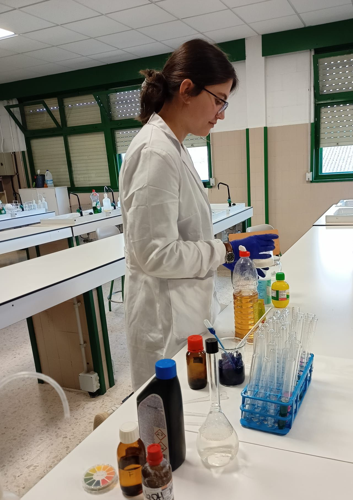
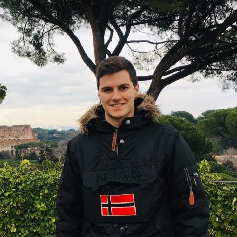

ROTEIRO CARTOGRÁFICO
Onde estivo a Sociedade?
Descubre os lugares que a nosa Sociedade visitou no noso mapa interactivo. Cada marcador simboliza un Obradoiro e están resaltados con diferentes cores que representan a data (dende a nosa inauguración en 2018). Explora connosco os recunchos que marcamos no noso percorrido!
QUEN SOMOS?
Descubre a nosa estrutura!
A SXGQ está integrada por persoas con grande interese na ciencia. Moitos de nós somos estudantes universitarios vinculados á área da química. Tod@s temos en común unha grande paixón pola química e polo galego!
Cada ano máis xoves con interese na ciencia se incorporan ao noso proxecto. Cada un de nós xoga un rol crucial, e organizámonos en grupos de traballo coordinados polos membros da directiva. Queres coñecernos? Continúa lendo!

Yeray Folgar, presidente
Estudante de doutoramento en Ciencia e Tecnoloxía Química na USC. Centrado na entrega de compostos bioactivos a células, desenvolve a súa actividade investigadora en química biolóxica no CiQUS. Ademais da súa paixón pola divulgación científica, tamén disfruta coleccionando insectos, minerais e fósiles.

Alejandro Rodríguez, vicepresidente
Estudante de Química e Bioloxía na USC. Inquedo e curioso, gústalle preguntarse o porqué das cousas. Desfruta xermolando sementes e creando cousas coas maos. Ama as abellas.
Patricia Fulias, secretaria
Estudante de doutoramento en Ciencia e Tecnoloxía Química na USC. O seu traballo céntrase no desenvolvemento de novos fluoróforos e tamén no estudo do novos transportadores celulares no CiQUS. Nos seus ratos libres gústalle bailar, aprender sobre política social e fedellar no mundo da repostería.

Ana Seijas, tesoureira
Tras rematar o dobre grao en Bioloxía e Química saltou a un mestrado de Nanobiofotónica Molecular. Encántalle pasar tempo no laboratorio cacharreando. Gústalle achegar a ciencia á sociedade. Apaixoada da natureza e da fotografía.

Adriana Barros, vogal
De Santiago de Compostela e graduada en Química. Encántalle a ciencia como ferramenta para explicar fenómenos cotiás e mellorar o noso día a día. Namorada do mar e aficionada á natación.

Bea Lista, vogal
De Malpica de Bergantiños. Graduada en Bioloxía e en Química. Desfruto moitísimo o proceso que leva consigo a divulgación científica. Ademais da ciencia, encántame o deporte. Concretamente, xogo ao fútbol sala.

Marta Vélez, vogal
Graduada en química e bioloxía e actualmente cursando o máster de profesorado. Leva dende pequena interesada pola ciencia e agora quere compartir a súa paixón cos demais.

Sergio Serantes, vogal
Graduado en Bioloxía e Química pola Universidade de Santiago de Compostela, mestrado en Biotecnoloxía Molecular pola Universidade de Barcelona. Estudante de doutoramento en Ciencia e Tecnoloxía Química, avaliando as propiedades antitumorais de estruturas peptídicas supramoleculares.

...e moit@s máis!
A directiva é importante para a coordinación, pero no laboratorio e na rúa tod@s aportamos por igual. A Soci está chea de grandes persoas coas que podes traballar a gusto, aprender moitísimo e pasalo de marabilla!
Quererías formar parte do noso equipo? Escríbenos un email presentándote!
ApúntateQUE FACEMOS?
Coñece o noso traballo
A Sociedade Xuvenil Galega de Química é unha asociación xuvenil sen ánimo de lucro adicada á divulgación da ciencia, e máis concretamente da química, en Galicia. Entre os nosos obxectivos está espertar a curiosidade científica nos máis cativos e poñer o noso gran de area na erradicación da quimiofobia tan estendida que hai na nosa sociedade.

A asociación foi fundada en 2018 por un pequeno grupo de amigos comprometidos con achegar o coñecemento científico á sociedade, e actualmente somos máis de 40 estudantes de grao, máster e doutoramento implicados neste proxecto. Ademáis, non somos só químicos: nas nosas filas contamos tamén con biólogos e farmacéuticos.

A nosa sede atópase en Santiago de Compostela. Dende alí movémonos a distintas cidades e vilas de Galicia para levar os nosos obradoiros a colexios e institutos. Nestas actividades, aparecemos con experimentos e demostracións para abraiar a alumnado e profes por igual, e de paso explicar conceptos sinxelos de química.

Por outra banda, tamén adoitamos participar en feiras de ciencia e divulgación. Tivemos a sorte de participar nas últimas edicións do Cullerciencia, o espazo científico das Festas do Barrio de San Pedro en Santiago de Compostela e no OpenScienceCambre. Nestes eventos, montamos o noso tenderete con múltiples experiencias científicas para todos os públicos.
Ademáis de levar a cabo unha ampla labor presencialmente, tamén estamos nas redes sociais. Na nosa conta de Instagram subimos infografías, reels e carruseis contando curiosidades e explicando fenómenos relacionados coa química.
Gústache o que les? Envíanos unha mensaxe e falamos!
Contacta connoscoGALERÍA
Obradoiros en Colexios: Inspirando Futuros Científicos
Feiras Científicas: Explorando a Ciencia en Acción
Eventos: Loitando por un Futuro
Asembleas: Unión para o Progreso Científico
CONTACTA CONNOSCO
Escoitámoste
Gustaríache ter un obradoiro no teu colexio? Tes algunha idea, comentario, suxerencia que poidamos satisfacer? Quererías entrar a formar parte do noso equipo e participar nas nosas actividades dende dentro? Para calquera cousiña que desexes, podes poñerte en contacto connosco a través deste formulario (ou escribindo directamente a sxgquimica@gmail.com se o prefires).
Sentímolo moito, pero actualmente estamos á capacidade máxima para os Obradoiros do actual curso académico. As solicitudes recibidas a partir de agora serán consideradas para o primeiro semestre do curso 2025/2026. Moitas grazas pola vosa comprensión!
Cando nos envías unha mensaxe a través de este formulario, o teu nome e dirección de email empréganse exclusivamente para que podamos poñernos en contacto contigo e contestarche. Aquí tes dispoñible a nosa política de privacidade, por se queres ler máis.